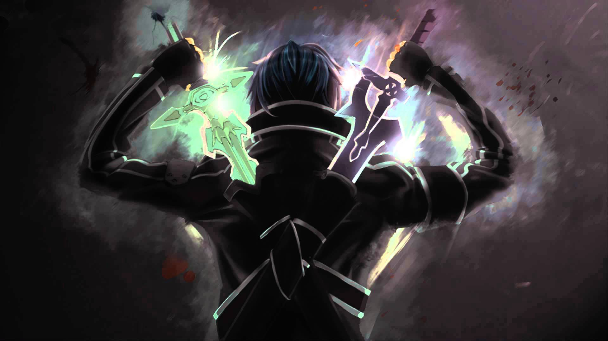

Over mezelf.
Ik ben Herman Moret. Ik ben 19 jaar en ik woon al 19 jaar in dordecht. Ik doe de opleiding Applicatie- en mediaontwikkelaar op het Da Vinci college dordrecht. ik ben een persoon dat hard werk en een groot doorzettings vermgen heeft ik probeer ook alles wat ik doe netjes en snel uittevoeren en probeer zoveel mogelijk zelf uittevinden en ben ook heel leergierig en zal al snel veel vragen stellen om zo veel mogelijk van mijn tijd gebruik te kunnen maken.
Hier onder kun je lezen over mijn hobby's.
Amine
Ik ben een grote anime fan in vindt het leuk om in mijn vrije tijd een aflevering te kijken. Heb ook al veel soorten anime gezien want het van ditcative serie's tot actie en avontuur en mij favorieten anime is sword art online.
dat komt omdat het verhaal gaat over een groep mensen die vast komen te zitten in een virtuele omgeving en dat ze het spel moeten spellen om er uit te komen. Dat vond ik heel intersant want ik hou van game en zou graag een echte virtuele omgeving creeën waar

games
Ik speel al games vanaf dat ik kan herinneren video spellen. Ik ben begonnen met the legends of zelda masora's mask. Eeen openworld game waar ik veel plezier aan had en heb daarom meer spellen van de serie gespeeld . daarna ben ik over gestapt naar de Danganronpa serie dat is een spel waar in je goed moet lezen en opletten wat er in het verhaal gebeurt . Ook ben een fan van league of legends een moba die heel bekent